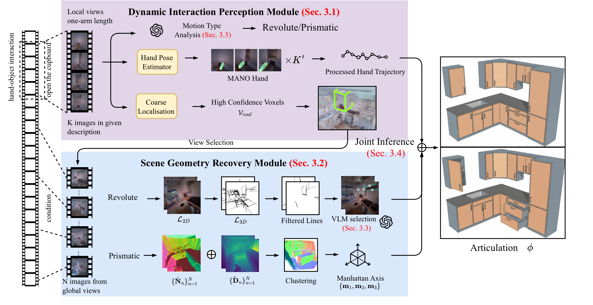
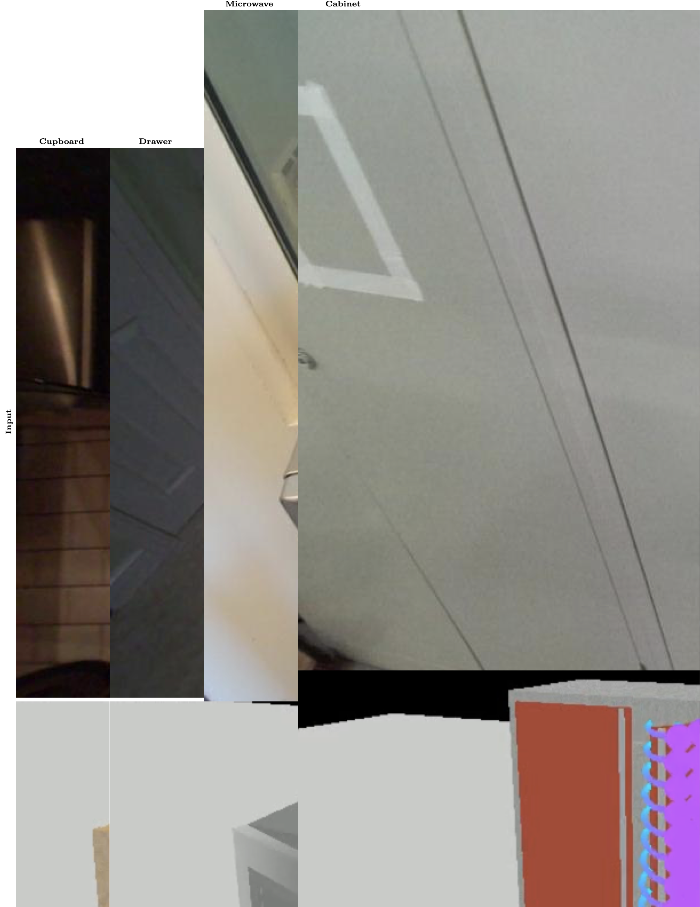

T L D R :
PAWS perceives object articulations from in-the-wild egocentric video via hand interaction and geometric cues, enabling downstream applications including articulation model fine-tuning and robot manipulation.
PAWS perceives object articulations from in-the-wild egocentric video via hand interaction and geometric cues, enabling downstream applications including articulation model fine-tuning and robot manipulation.
Articulation perception aims to recover the motion and structure of articulated objects (e.g., drawers and cupboards), and is fundamental to 3D scene understanding in robotics, simulation, and animation. Existing learning-based methods rely heavily on supervised training with high-quality 3D data and manual annotations, limiting scalability and diversity. To address this limitation, we propose PAWS, a method that directly extracts object articulations from hand–object interactions in large-scale in-the-wild egocentric videos. We evaluate our method on the public data sets, including HD-EPIC and Arti4D data sets, achieving significant improvements over baselines. We further demonstrate that the extracted articulations benefit downstream tasks, including fine-tuning 3D articulation prediction models and enabling robot manipulation. Code and data sets will be released upon acceptance.

Overall pipeline. Given a full in-the-wild egocentric video and a language description as input, our pipeline consists of four parts: (1) Dynamic Interaction Perception: We first segment the video based on the language description and extract interactive frames (referred to as "local views"), 3D hand trajectories, motion types, and coarse object localizations. (2) Geometric Structure Recovery: Based on the object's location, we select "global views" from the full video. Depending on the motion type, we recover the scene geometry using different flows. (3) VLM-guided Reasoning: The VLM first infers the motion type to provide a prior for global view selection, and then identifies plausible articulation axes during the geometry recovery stage. (4) Joint Articulation Inference: We integrate 3D hand trajectories and the recovered geometry to infer the final articulations.

Qualitative comparison of articulation prediction. We compare our method against Articulate-Anything (AA) and ArtiPoint across four articulation tasks: Cupboard, Drawer, Microwave, and Cabinet. The yellow arrows denote the predicted articulation. Where applicable, we also visualize the object and hand trajectories.